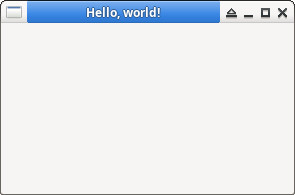

參考資訊：
https://gambaswiki.org/website/en/main.html
main/.src/FMain.form
# Gambas Form File 3.0
{ Form Form
MoveScaled(0,0,41,24)
Text = ("Hello, world!")
}
main/.project
Startup=FMain Component=gb.image Component=gb.gui Component=gb.form
執行
$ cd $ mkdir -p main/.src $ touch main/.src/FMain.class $ gbc3 -v main $ gbs3 -c main
